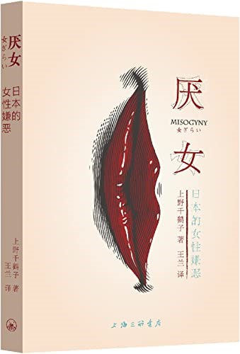

图片来源：https://www.amazon.cn/dp/B09N3CKT1T
“厌女”，主要包括对女性的一种贬抑、一种排斥和一种憎恨、仇视。它有很多不同的体现，显而易见的憎恶之外，还有比如说把女性、把跟女性有关的事情琐碎化，就是把女性看得非常微小， 像细枝末节一样不重要。另外一点，是把女性外在化，认为女性不是一个有思想有灵魂的平等的人，而只是一个很表面化的个体。
“厌女文化”还和另外一种现象相关——“惧女"(或恐女)，就是对女性恐惧，害怕什么呢？害怕女性的力量——女性是很有力量的。
除了“厌女"外，还有一种现象是“慕女(或拜女)，其表现为对女性的神圣化，仰慕、倾慕、膜拜，包括神话女性、崇拜女性、把女性圣母化等等，凡此种种，也是把女性对象化，当作客体去看待。
"Misogyny" mainly includes a kind of depreciation, rejection, hatred, and resentment of women. There are many manifestations of misogyny, including the apparent disdain but the trivialization of women and things related to women. For example, women are seen as small and unimportant. Another point is the externalization of women that women are not equal human beings with a mind and soul, but only superficial individuals.
"Misogynistic culture is also related to another phenomenon - "fear of women" (or Germanophobia), that is, fear of women. Fear of women's power - women are compelling.
In addition to "misogyny," there is also a phenomenon of "female admiration (or worship), which is manifested in the sanctification of women, respect, adoration, glorification, including the myth of women, worship of women, the sanctification of women, etc., all these, but also the objectification of women, as objects to seeing.